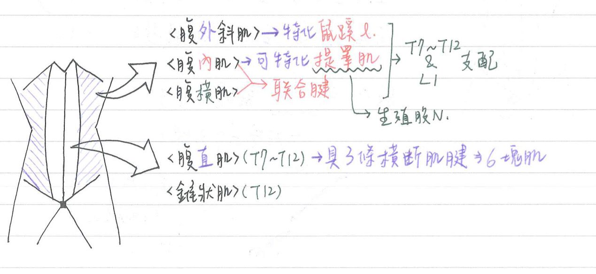
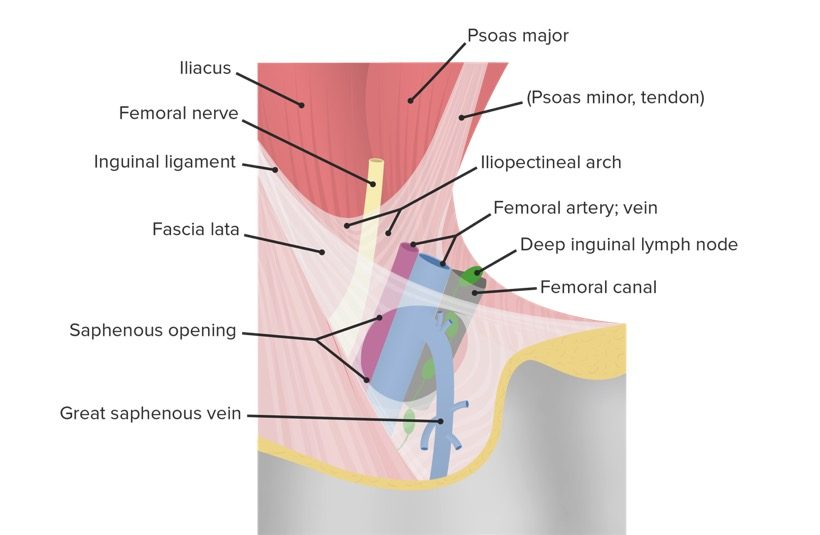
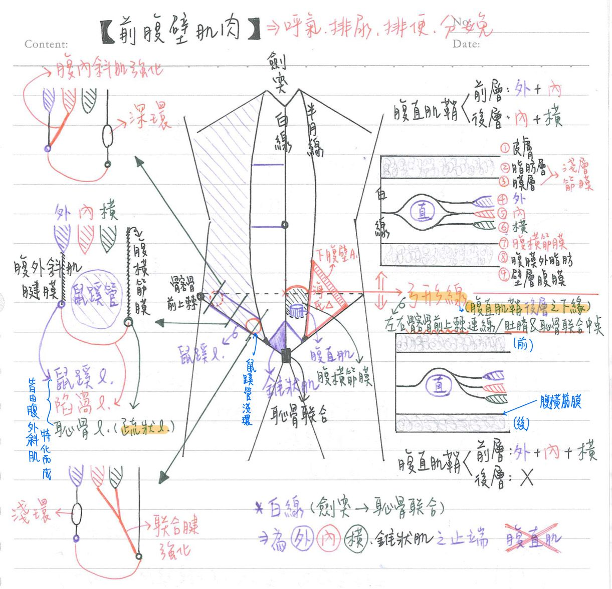
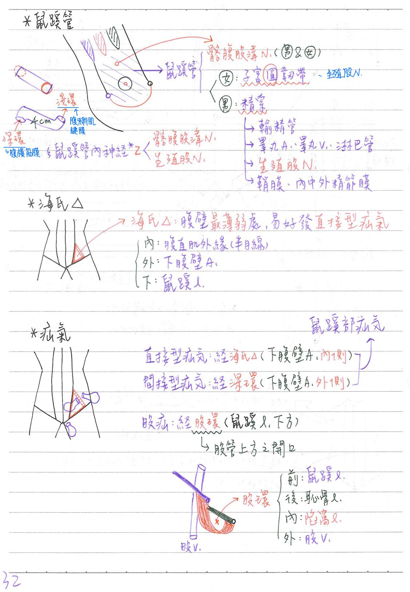

💪🏼 肌肉系統：前腹壁肌肉
腹壁兩側肌肉：外內橫(3種)
| 肌肉 | 神經支配 | 特化物 |
|---|---|---|
| 腹外斜肌 (external abdominal oblique m.) | 脊N(T7~T12 & L1) | 腱膜下緣 ⇒ ★★鼠蹊韌帶、★陷窩韌帶、★恥骨韌帶 |
| 腹內斜肌 (internal abdominal oblique m.) | 脊N(T7~T12 & L1) | 提睪肌 腹內斜肌肌腱+腹橫肌肌腱⇒ ★★聯合腱 |
| 腹橫肌 (transverse abdominal m.) | 脊N(T7~T12 & L1) |
- 腹壁肌肉的特化物：
- 鼠蹊韌帶(inguinal/poupart l.)：★腹外斜肌腱下緣特化
- 起-止：★髂股前上棘-恥骨結節，★位於鼠蹊管外下方
- 陷窩韌帶(lacuna/Gimbernat's l.)：腹外斜肌腱膜向內反折
- 恥骨韌帶/梳狀韌帶(pectineal/Cooper's l.)：陷窩韌帶到達恥骨梳後與外骨膜之加厚所形成
- 提睪肌(cremasteric m.)：由腹內斜肌特化而成，由★★生殖股N(genitofemoral n.)支配
- ★聯合腱(conjoint tendon)=鼠蹊鐮(inguinal falx)：由腹內斜肌肌腱+腹橫肌肌腱構成
- 內下方附著於白線、恥骨嵴&恥骨梳
- 鼠蹊韌帶(inguinal/poupart l.)：★腹外斜肌腱下緣特化

腹壁中央肌肉：2種
| 肌肉 | 起-止點 | 神經支配 | 血液供應 | 備註 |
|---|---|---|---|---|
| 錐狀肌 (pyramidalis m.) | 恥骨-白線 | 脊N(T12) | ||
| 腹直肌 (rectus abodominis m.) | ★恥骨- R5~R7肋軟骨&胸骨 | 脊N(T7-T12) | 上腹壁A(from ★內胸A) 下腹壁A(from ★外髂A) | 外緣：半月狀線(linea semilunaris) 內緣：白線(linea alba) 具有3條橫斷肌腱(tendinous intersection)⇒收縮呈現6塊肌 腹直肌橫移術(TRAM)：可做為皮瓣移植，例如乳房重建 |
- 白線(linea alba)：
- 從劍突(xiphoid process)~恥骨聯合(symphysis pubis)，血管較少
- [重點]為腹外斜肌、腹內斜肌、腹橫肌、錐狀肌之止端(不包含腹直肌)
- 腹部開刀若沿半月狀線切割(pararectus incision)—>易使下腹壁A受損
- 前腹壁肌肉功能：幫助呼吸、排尿、排便、分娩等
[重點]前腹壁構造(由淺→深)
- 皮膚
- 淺層筋膜(superficial fascia)
- 脂肪層(fatty layer)=Camper’s fascia
- 膜層(membranous layer)=★Scarpa’s fascia
- 腹外斜肌、腹內斜肌、腹橫肌
- 腹橫筋膜(fascia transversalis)：可往下延伸為股鞘(femoral sheath)
- 腹膜外脂肪(extraperitoneal fat)
- 壁層腹膜(parietal peritoneum)
- (重點)腹直肌鞘(rectus sheath)：分前、後兩層
- 前層：
- 上3/4：腹外斜肌腱膜、腹內斜肌腱膜
- ★下1/4：腹外斜肌腱膜、腹內斜肌腱膜、腹橫肌腱膜
- 後層：
- 上3/4：腹內斜肌腱膜、腹橫肌腱膜
- 下1/4：缺 (位於腹橫筋膜之上)
- 上3/4 & 下1/4分界：★左、右髂前上棘(S2)之連線(=臍&恥骨聯合中點)
- 後層下緣：形成弓形線(arcuate line)—>位於臍&恥骨聯合中點 (同上3/4 & 下1/4的分界~)
- 腹直肌鞘包住腹直肌上3/4的前&後方，但僅包住其下1/4的前方
- 前層：
鼠蹊部(groin)
- 鼠蹊管/腹股溝管(inguinal canal)：
- 長度：約4cm，從深環(由★★★[108-2]腹橫筋膜形成)→ 淺環(由腹外斜肌腱膜形成)
- (重點)構造：
- 前壁：★★腹外斜肌筋膜，前壁靠腹內斜肌(@深環前方)強化
- 後壁：★腹橫筋膜，後壁靠聯合腱(@淺環後方)強化
- 下壁：鼠蹊韌帶、陷窩韌帶、梳狀韌帶
- 上壁：腹內斜肌&腹橫肌下緣
- 內容物：
- 男女皆有：髂腹股溝N.=腸鼠蹊N. (ilioinguinal n.)
- 男：★精索(spermatic cord)，內含[輸精管、睪丸A./V.、睪丸淋巴管、生殖股N.、鞘膜、內/中/外精筋膜}
- 女：★子宮圓韌帶(round l.)、生殖股N.
- 海氏三角(Hesselbach triangle)=鼠蹊三角(inguinal triangle)
- (重點)邊界：
- 內界：腹直肌外緣(半月線)
- 外界：下腹壁A.(外髂A.分支，經鼠蹊管深環內側上行，穿出腹橫筋膜，上經弓形線，到達腹直肌後方，與下行之上腹壁A.相吻合)
- 下界：鼠蹊韌帶
- 特性：為腹壁最薄弱處，直接型疝氣好發位置
- 疝氣類型：
- 鼠蹊部疝氣(inguinal hernia)：腹腔內構造自鼠蹊部脫出
- ★★直接型(direct)：經海氏三角(@下腹壁A.內側)；男老人多
- ★間接型(indirect)：經鼠蹊管深環(@下腹壁A.外側)；男兒童~青年多、女性大多屬於這種
- 股疝(femoral hernia)：腹腔內構造自股環脫出，位於鼠蹊韌帶下方
- 鼠蹊部疝氣(inguinal hernia)：腹腔內構造自鼠蹊部脫出
- (重點)邊界：
- 股環(femoral ring)：為股管(femoral canal)上方之開口
- 前(上界)：鼠蹊韌帶
- 後(下界)：恥骨韌帶
- 內界：陷窩韌帶
- 外界：股V



📖 書本補充：與筆記不同或筆記沒寫到的地方
⚠️
以下為對照書本後整理，筆記原文未更動。標「筆記 vs 書」的是兩邊寫法不同、建議回頭確認的地方。
筋膜的類型（p.196）
- 淺筋膜兩層的延伸：
- 脂肪層（Camper's fascia）→ 男性特化含肉膜肌（dartos muscle），女性則成為大陰唇的成分。
- 膜性層（Scarpa's fascia）→ 在陰莖、陰囊形成肉膜肌筋膜（dartos fascia）；延伸到會陰部成為會陰淺筋膜（Colles' fascia）。
- 腹內筋膜（endoabdominal fascia）依覆蓋的肌肉命名：腹橫肌筋膜（腹橫肌內面）、腰筋膜（覆蓋腰方肌）、腰大肌筋膜（覆蓋腰大肌）。
- 書的提示：膜性層會延伸形成肉膜肌筋膜。
腹直肌鞘與弓狀線（p.197–198）
- 書用「各肌腱膜分前、後層」來看：弓狀線以上，腹內斜肌腱膜分成前後兩層把腹直肌夾住——前面＝腹外斜肌腱膜＋腹內斜肌前層；後面＝腹內斜肌後層＋腹橫肌腱膜＋腹橫肌筋膜（書說後面相當於4層筋膜層）。
- 弓狀線以下：三條肌肉的腱膜全部跑到腹直肌前面，後面只剩腹橫肌筋膜，所以較薄；厚薄交界就是弓狀線。
- 弓狀線位置：書寫在肚臍到恥骨嵴之間（筆記寫臍與恥骨聯合中點／髂前上棘連線，意思相近）。
- 腹直肌鞘不包含淺筋膜（所以 Scarpa's fascia 不參與鞘的組成，見 107-1-7）。
前外側的肌肉（p.199）
- 腹外斜肌腱膜往下形成腹股溝（鼠蹊）韌帶：外側附著髂前上棘、內側附著恥骨結節，內側再延伸成陷窩韌帶與恥骨梳韌帶。
- 神經血管平面（neurovascular plane）：前腹壁的血管、神經走在腹橫肌與腹內斜肌之間。
- 腹直肌被腱劃（tendinous intersection）分開；兩側有半月線；鞘的前層在中線會合處成白線。
- 筆記 vs 書：神經支配，筆記三條側腹肌都寫「T7–T12 & L1」。書上寫三條都來自肋間及肋下神經，但只有腹內斜肌與腹橫肌另有 L1 的支配（言下之意腹外斜肌沒有 L1）。
- 提睪肌由腹內斜肌延伸而來，所以是骨骼肌。
動脈供應和神經支配（p.201）
- 動脈：
- 內側：腹壁上A（來自胸內A）、腹壁下A（來自髂外A），兩者在腹直肌後面吻合。
- 外側：旋髂深A（髂外A，走向與腹股溝韌帶平行）；腹壁淺A、旋髂淺A（股A，走到皮下）；肋間及肋下A（主動脈，腹壁外側）。
- 神經：第7–11對肋間N（前外側壁肌肉和皮膚）、肋下N（T12）、髂腹下N、髂腹股溝N（L1）（腹下區、腹股溝區皮膚，以及腹內斜肌與腹橫肌最下面）。
- 肚臍處皮節約為 T10（考題常考）。
- 書的提示：髂腹股溝N會進入腹股溝管，出來後分布大腿上內側皮膚，並形成男性陰囊前神經／女性陰唇前神經；但它不屬於精索的一部分。
腹股溝管及疝氣（p.203–205）
- 筆記 vs 書：腹股溝管的「底部（下壁）」，筆記寫鼠蹊韌帶、陷窩韌帶、梳狀韌帶；書上寫由外往內是髂恥徑（iliopubic tract）→ 腹股溝韌帶 → 陷窩韌帶，沒有列梳狀韌帶。髂恥徑＝腹股溝韌帶內面、腹橫肌筋膜下方的增厚。
- 筆記 vs 書：「頂部（上壁）」，筆記寫腹內斜肌＆腹橫肌下緣；書上另外列入腹橫肌筋膜及腹外斜肌的部分纖維（即腹橫肌筋膜＋腹內斜、腹橫肌的弓狀纖維＋部分腹外斜肌纖維）。
- 前壁：書寫腹外斜肌的腱膜（筆記寫「腹外斜肌筋膜」，指的應是同一層）。後壁：腹橫肌筋膜及（內側）聯合肌腱。
- 開口：淺環＝腹外斜肌腱膜的裂孔；深環＝腹橫肌筋膜的裂孔（113-1-19、108-2-26 都考這點）。
- 疝氣比較（書的表）：
- 直接性：後天、較不常見、多見於成熟男性；位置＝腹股溝內側窩（medial inguinal fossa）＝腹股溝三角。
- 間接性：先天、較常見、多見於男性；位置＝腹股溝管深環（腹股溝外側窩，lateral inguinal fossa）。
- 記憶法：直接性疝氣處原本沒有洞，是臟器長久擠壓使組織鬆弛才直接掉進陰囊 → 長久擠壓所以是後天、發生在成熟個體。
- 鞘突（vaginal process）男女都會出現（108-2-26 解析）。
精索（p.206–209）
- 內含物（書的表）：睪丸A（腹主動脈）、輸精管A（膀胱下A）、提睪肌A（腹壁下A）、蔓狀靜脈叢（形成睪丸靜脈）、自主神經（交感＋副交感）、生殖股N的生殖支（支配提睪肌）、輸精管。
- 精索被膜與前腹壁各層的對應：
- 皮下組織（淺筋膜）→ 肉膜肌筋膜及肉膜肌（平滑肌）
- 腹外斜肌（腱膜）→ 精索外筋膜
- 腹內斜肌 → 提睪肌；腹內斜肌的筋膜 → 提睪肌筋膜
- 腹橫肌 → 無（腹橫肌沒有延伸進入精索）
- 腹橫肌筋膜 → 精索內筋膜
- 腹膜 → 鞘突，殘留成鞘膜（tunica vaginalis）
- 提睪肌反射：碰觸大腿上部內側 → 感覺經髂腹股溝N傳入脊髓 → 興奮生殖股N的生殖支 → 提睪肌收縮將睪丸上提。
- 記憶法：提睪肌是腹內斜肌往下延伸的骨骼肌，所以由體壁神經支配；血液也順著來自供應前腹壁的腹壁下A。
- 蔓狀叢是非典型靜脈，肌肉壁較厚（中膜環走＋外膜縱走平滑肌），位於精索內而非睪丸內（112-2-45）。
- 精索積水（水囊）＝液體積在鞘突之間；睪丸積水＝液體積在鞘膜臟層與壁層之間（109-1-34 解析）。
📝 書中歷屆考題（點選答案作答）
107-1-7p.198
下列何者構成弓狀線 (arcuate line) 下方腹直肌前的鞘膜 (rectus sheath anterior to the rectus abdominis)？①Scarpa's fascia ②腹外斜肌 (external abdominal oblique muscle) 的腱膜 (aponeurosis) ③腹內斜肌 (internal abdominal oblique muscle) ④腹橫肌 (transverse abdominis) 的腱膜
💡 Scarpa's fascia 屬於淺筋膜，不參與腹直肌鞘。
105-2-16p.200
有關腹直肌 (rectus abdominis) 的敘述，下列何者錯誤？
💡 腹壁下A來自髂外A。
106-2-26p.200
下列何者的形成與腹內斜肌 (internal oblique muscle) 最有關？
💡 深環與精索內筋膜來自腹橫肌筋膜；腔隙（陷窩）韌帶是腹股溝韌帶（腹外斜肌）的延伸。
104-2-15p.202
下列何者不支配前腹壁構造？
💡 閉孔N由後腹壁發出，支配大腿內側肌群。
107-1-22p.202
肚臍的皮節 (dermatome) 是：
112-2-21p.202
闌尾炎初期出現肚臍附近 (periumbilical) 疼痛感，此痛覺與下列何脊髓節段有關？
💡 肚臍附近的皮節由 T10 負責。
106-2-8p.205
有關鼠蹊韌帶 (inguinal ligament) 的敘述，下列何者錯誤？
💡 外端應是髂前上棘。
108-2-26p.205
有關腹股溝管 (inguinal canal) 的敘述，下列何者正確？
💡 女性通過的是子宮圓韌帶；鞘突男女都有；管內的疝氣是間接型。
112-2-22p.205
下列何構造延伸通過腹股溝管 (inguinal canal)？
💡 卵巢韌帶連接卵巢與子宮體；子宮薦骨韌帶、主韌帶是固定子宮於骨盆腔的韌帶。
112-2-20p.205
直接型腹股溝疝氣 (direct inguinal hernia) 好發於下列何處？
💡 腹股溝內側窩即腹股溝三角（海氏三角）。
113-1-19p.205
腹股溝深環 (deep inguinal ring) 位於下列何結構？
107-2-26p.207
下列何者不存在精索 (spermatic cord) 內？
111-1-21p.208
下列何者不在精索 (spermatic cord) 內？
💡 髂腹股溝N有進入腹股溝管，但沒有進入精索內。
112-1-19p.208
精索內筋膜 (internal spermatic fascia) 衍生自前腹壁的何種結構？
109-1-45p.208
關於精索 (spermatic cord) 的組成構造，下列敘述何者正確？
💡 蔓狀叢屬小型靜脈；輸精管上皮為偽複層柱狀上皮；精索內充滿的是輸精管、動靜脈及神經等。
109-1-9p.208
有關精索 (spermatic cord) 的敘述，下列何者錯誤？
💡 三層＝精索外筋膜、提睪肌筋膜、精索內筋膜；精索內有淋巴管。
112-2-45p.208
關於蔓狀叢 (pampiniform plexus) 的敘述，下列何者正確？
💡 蔓狀叢在精索內；平滑肌在中膜（環走）與外膜（縱走）都有。
109-1-34p.209
精索積水 (hydrocele of the spermatic cord) 是由於下列何者閉鎖不全造成？
💡 精索積水是液體積在鞘突內；睪丸積水則積在鞘膜臟層與壁層之間。
104-2-19p.209
下列何者受損時最可能影響提睪肌 (cremasteric muscle) 的收縮？
109-2-6p.209
下列何者支配提睪肌 (cremasteric muscle)？
103-1-19p.209
下列何者不是骨骼肌？
💡 肉膜肌是陰囊壁上的平滑肌。